What each adult dungeon in Ocarina of Time needs, what it unlocks, and every glitchless order of the five temples. Requirements cover every chest in each dungeon, Gold Skulltulas excluded, except Gerudo Proving Grounds, where the goal is only the Ice Arrows.
Everything Child Link can get before pulling the Master Sword is assumed to be in your inventory, including optional items like Din's Fire.
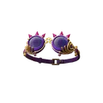
The Lenses of Truth are optional everywhere. They show invisible things in Shadow, Spirit, Proving Grounds, Bottom of the Well and the Mirage Desert, and every one of them can be done from memory or with a guide. Doing Bottom of the Well before Shadow and Spirit makes them easier, but it is not required.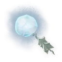
Proving Grounds: the Ice Arrows take seven keys. The seventh comes from either the Hammer or the Iron Boots. The Gerudo Pass gets you in, and the Lenses of Truth help with the hidden chest and the fake wall.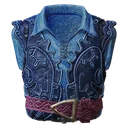
Water needs the Zora Tunic for the Central Pillar chest. Fire needs Scarecrow Song for its Scarecrow chest.With the Hookshot and Epona, all of this is open before you set foot in a temple.
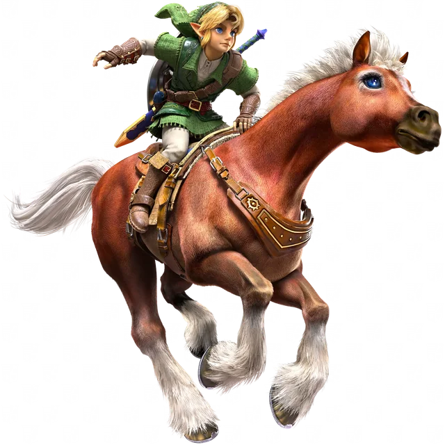
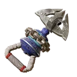
Hookshot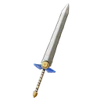
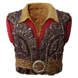
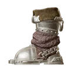
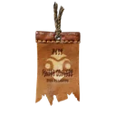
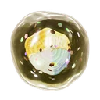
Columns run left to right in the order things open up. The small icons on the left of each dungeon are what it needs, and each line comes from the dungeon that gives that item. Hover or click a dungeon to see only what it depends on and what it opens.
The first six set the order of the temples. The last two place the side dungeons.
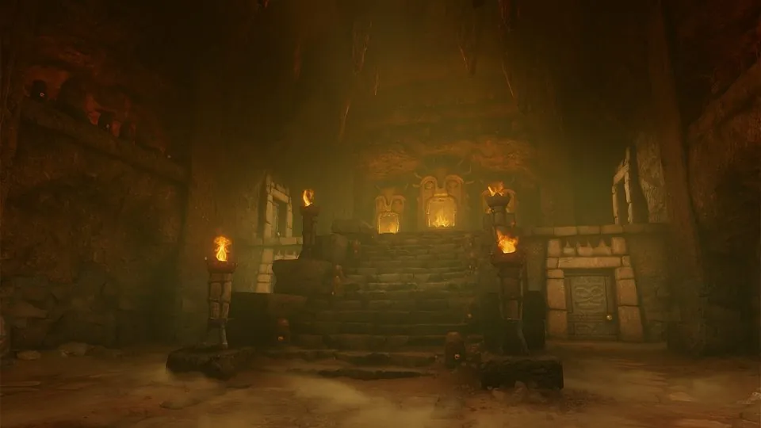
Firecan be firstThe Bow only opens the 3F door to the Dungeon Map, and you can reach that room from the other side. The map chest needs either the Bow or the sixth key.
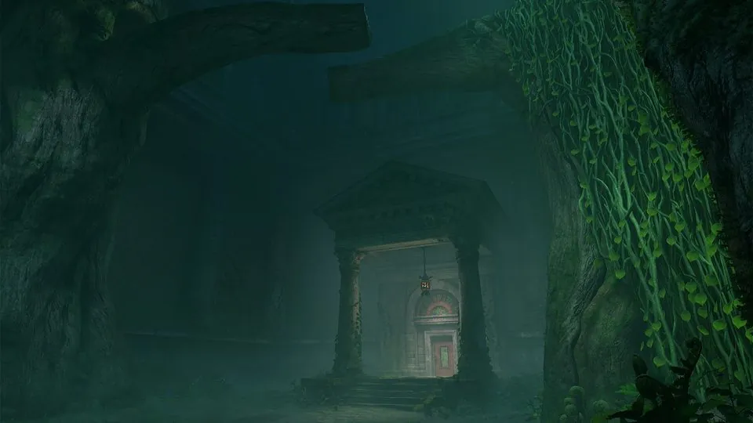
Forest→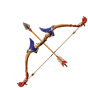
Bow→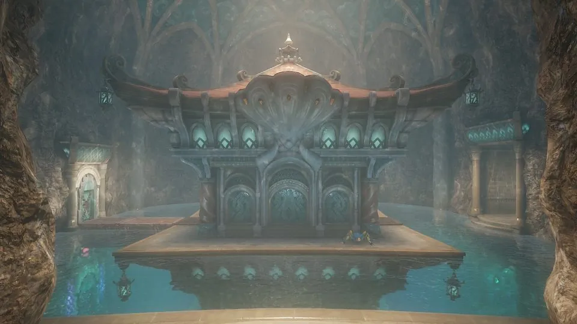
WaterWater can come before Fire, but only after Forest. The River chest behind Dark Link can only be opened with the Bow.
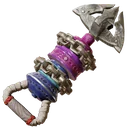
Longshot→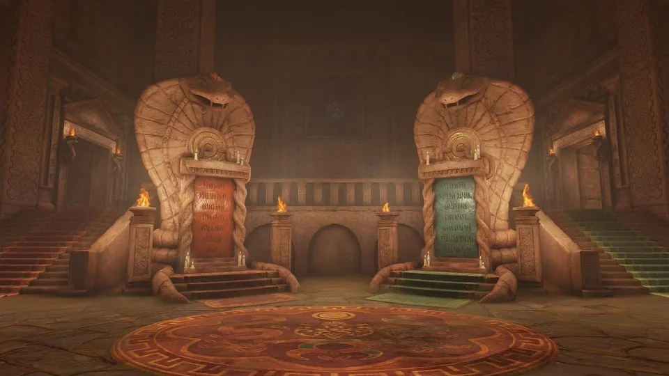
SpiritThe Longshot crosses the River of Sand in the Mirage Desert. The Hover Boots also work, but Shadow comes after Water anyway.
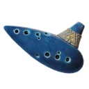
past→SpiritSpirit has a Child Link section. Sheik tells you that you can return the Master Sword to go back in time once the Forest Temple is cleared.
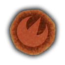
Fire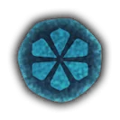
Water→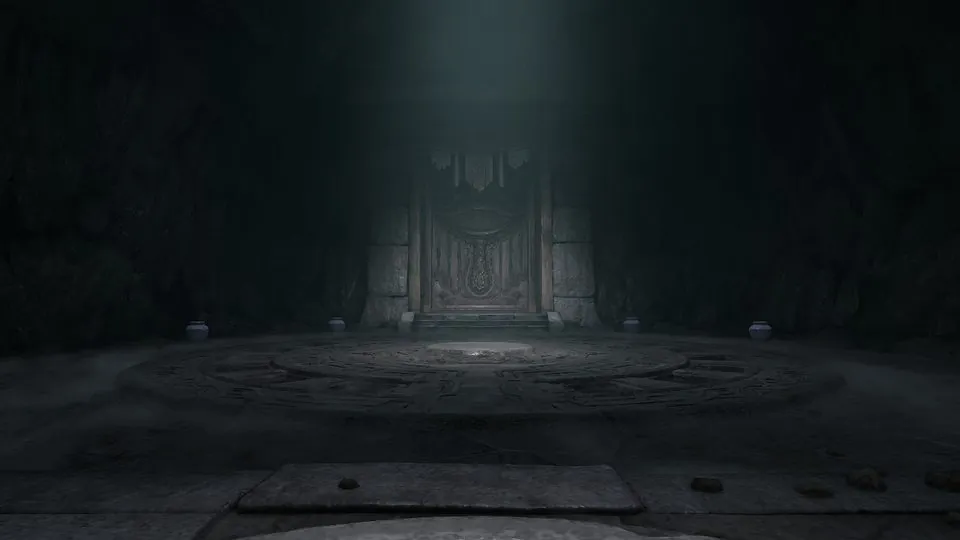
ShadowThe Kakariko cutscene with Sheik teaching the Nocturne of Shadow needs all three medallions.
Spirit can come before Shadow because it does not need the Hover Boots. The Longshot covers the Mirage Desert.
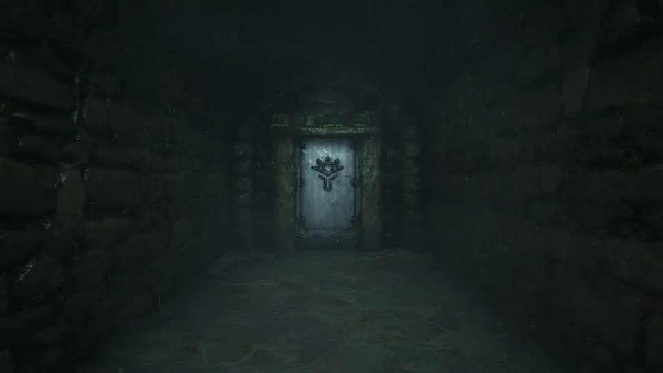
Well→Lenses→ShadowSpiritBottom of the Well before Shadow and Spirit gives you the Lenses of Truth for their invisible walls, floors and chests. They are optional if you know where those are. The Well itself can only be done after Forest, as Child Link.
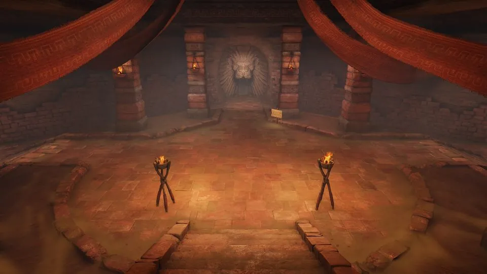
Ice ArrowsThe Ice Arrows open right after Forest if you also have the Iron Boots from Ice Cavern, which is open from the start. Otherwise they wait for the Hammer from Fire.
Items needed for every chest except Gold Skulltulas, not counting the dungeon's own item. Proving Grounds lists the minimum for the Ice Arrows. Everything Child Link can get before pulling the Master Sword is assumed and not listed.
The seven glitchless orders of the five temples.
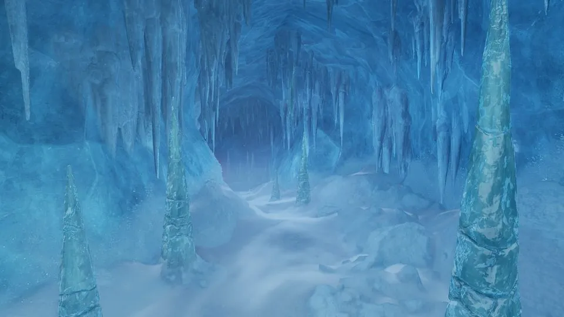
Ice CavernBefore Water, for the Iron Boots and the Zora Tunic.Where each temple can land across the 7 orders. The darker the cell, the more orders put that temple in that slot.
Forest is first in 5 of 7 and never later than 2nd. Shadow is never before 4th. Fire is the only temple that can move from 1st all the way to 4th.